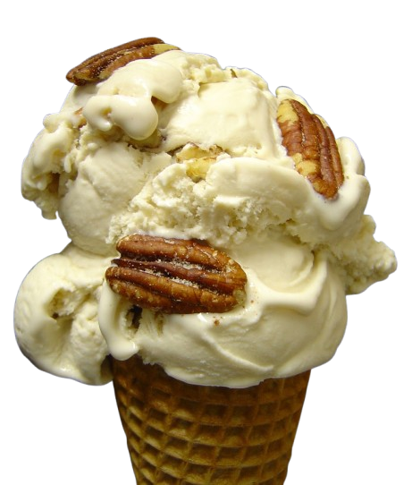
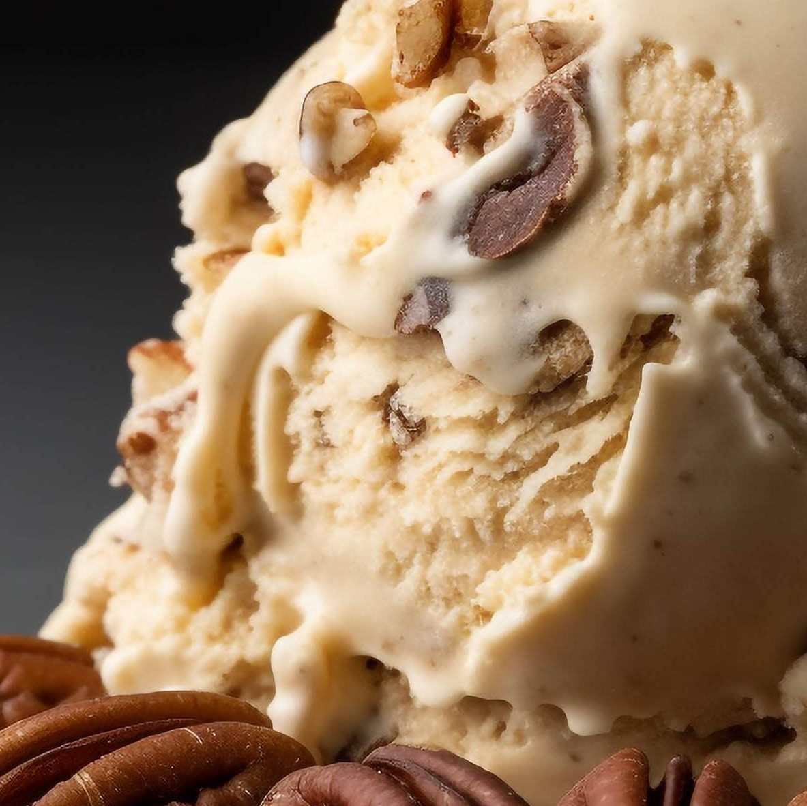
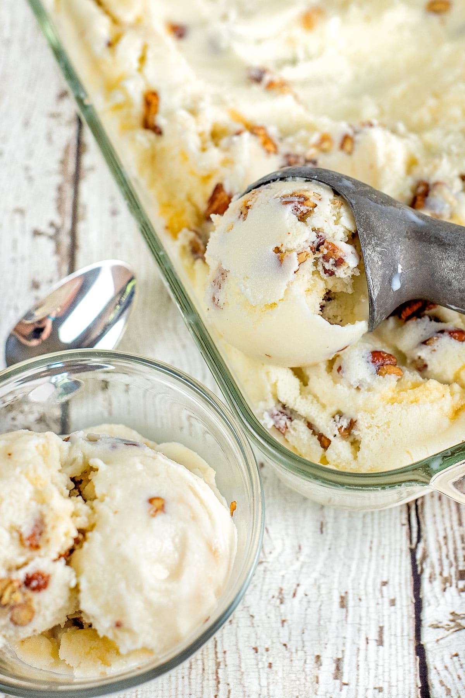

Icicle
Recipe of the day: Butter Pecan Ice Cream
Butter pecan ice cream is a delicious treat that combines creamy, buttery ice cream with crunchy, toasted pecans. Its rich flavor is enhanced by a hint of vanilla, creating a smooth and velvety texture. The roasted pecans add a warm nuttiness that perfectly complements the ice cream. Whether enjoyed in a cone or a bowl, butter pecan ice cream offers a comforting and nostalgic experience, making it a beloved choice for ice cream lovers.

Adore its rich flavor with caramelized butter notes, the roasted pecans which add a CRONCH to it's buttery smooth texture. Mastered, tested and tasted over the years to perfection!




Drooling? Why not make it at home!
Ingredients: 2 cups heavy cream, 1 cup whole milk, 3/4 cup brown sugar, 1/2 cup chopped pecans, 1 tsp vanilla extract, pinch of salt.
Instructions: In a bowl, whisk together cream, milk, sugar, vanilla, and salt. Stir in pecans. Pour into an ice cream maker and churn according to manufacturer's instructions. Freeze until firm.